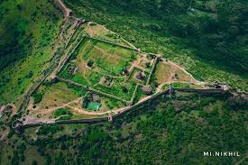
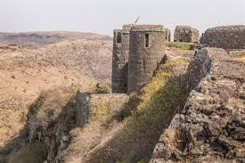
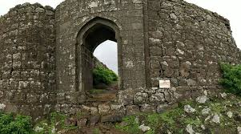

मल्हारगड किल्ला
Location : Click Here For Google Map
- माहिती
- मल्हारगड किल्ला, जो पुणे जिल्ह्यात स्थित आहे, एक ऐतिहासिक किल्ला आहे. किल्ल्याची उंची सुमारे १,०४५ मीटर (३,४३० फूट) आहे. किल्ल्याचे महत्त्व मराठा साम्राज्याच्या काळातील आहे. माल्हारगड किल्ल्याचा वापर सामरिक दृष्ट्या अत्यंत महत्त्वाचा होता आणि किल्ल्याचे संरक्षण देखील अत्यंत मजबूत होते. किल्ल्याच्या शिखरावर एक पवित्र मंदिर आहे आणि किल्ल्याच्या संरचनेत विविध पायऱ्या आणि मजबूत भिंती आहेत. किल्ल्याच्या शिखरावरून पुणे शहर आणि आसपासच्या परिसराचा अत्यंत सुंदर दृश्य दिसतो. माल्हारगड किल्ला ट्रेकिंगसाठी एक आव्हानात्मक ठिकाण आहे आणि आजही साहस प्रेमी आणि ट्रेकर्ससाठी एक लोकप्रिय स्थळ आहे.
Explore the historical beauty


